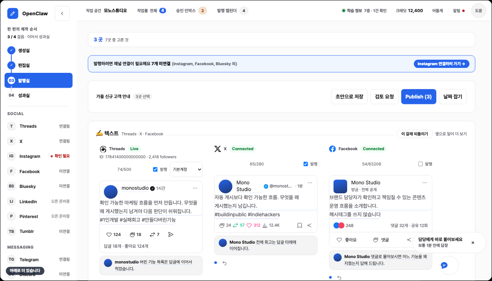
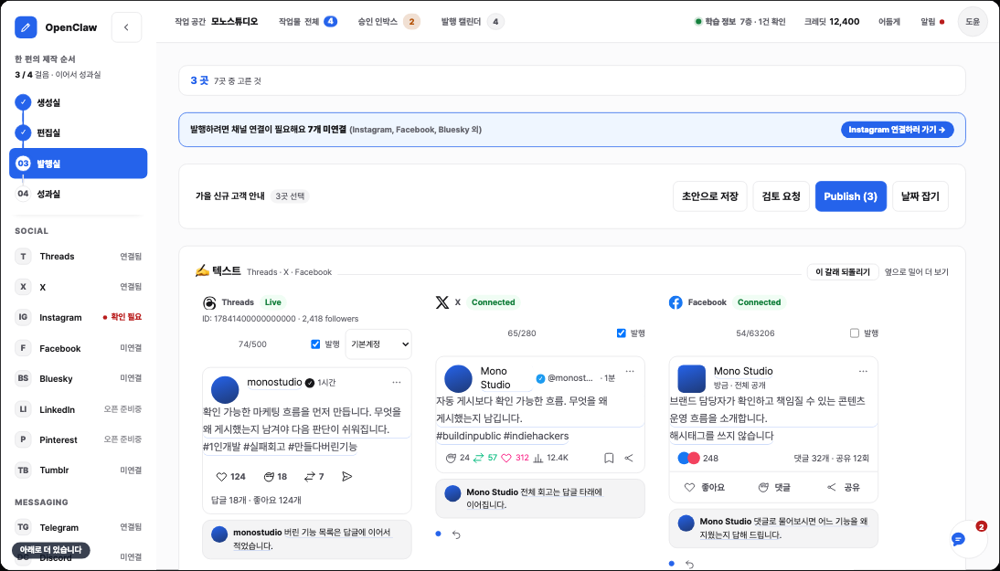
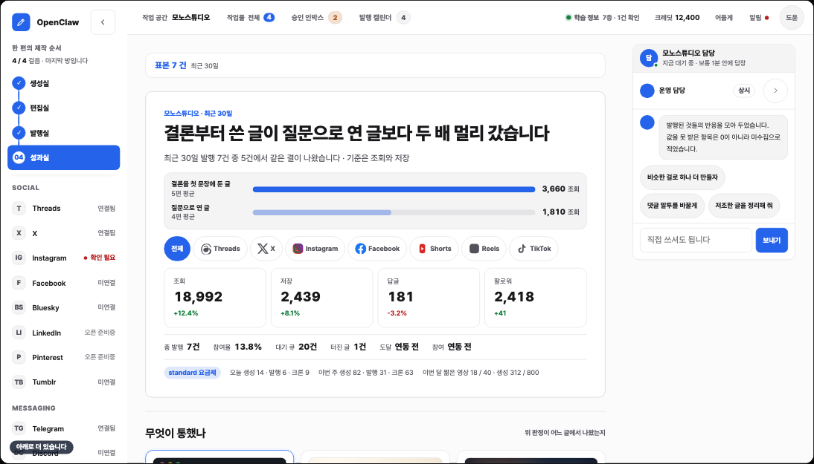
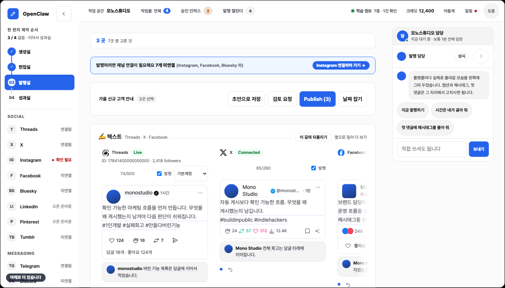

2026-08-27 · 회장님이 열어 보실 것만 모았습니다. 위에서부터 보시면 됩니다. 정하실 것은 맨 아래 판단 칸에 모아 뒀습니다.
지금까지 제 검사는 회장님이 그때 짚으신 문구만 셌습니다. 그 문구를 지우면 통과했고, 다음 판에 새 문장이 새 자리에 생기면 또 통과했습니다. 매번 그 하나만 잡고 성질을 안 잡았습니다.
| 검사 | 지난 판 | 이번 판 | 상한 |
|---|---|---|---|
| 작은 글씨가 안내조로 끝남 | 22건 | 6건 | 8 |
| 마침표까지 붙은 안내 문장 | 9건 | 3건 | 3 |
| 문단이 안내조로 끝남 | 8건 | 3건 | 4 |
| "함께 나갑니다" 류 | 10건 | 0건 | 0 |
지운 기준은 하나입니다. 화면 구조와 이름으로 알 수 있는 것을 문장으로 또 말하면 사족. 남긴 것은 지금 벌어진 일뿐입니다.
공식 문서 세 곳 조사. 접으면 오른쪽 칸이 통째로 사라져 320px을 디스플레이가 가져갑니다 (클릭하면 크게)

새 메시지가 오면 라벨이 작은 버튼으로 줄어듭니다. 채널톡 방식 (클릭하면 크게)

30일 성과를 보는 자리에 한 편의 제목이 서 있던 것을 걷었습니다 (클릭하면 크게)

첫 댓글 칸 발밑 안내를 걷고, 캐러셀 화살표가 글자를 안 덮게 (클릭하면 크게)

제가 "접기를 되살려라"만 쓰고 무엇처럼 만들지를 안 썼습니다. 지난 판 파일에 채널톡이 0건이었습니다. 이번엔 공식 문서 세 곳을 열어 접힌 버튼 크기(56px과 44px), 라벨 막대 규칙, 새 메시지 때 라벨이 줄어드는 동작까지 가져왔습니다.
앞으로 기존 방식을 요구할 때는 벤치마킹 대상 제품을 위임서에 적습니다.
"네 방 상단을 같은 모양으로"만 쓰고 무엇을 담을지를 안 정해 줘서 작업물 제목으로 채워졌습니다. 그 제목이 파일 29곳에서 반복됐습니다. 제목 칸을 걷고, 네 방이 공통으로 갖는 것은 "그 방에서 지금 알아야 할 값 하나"로 다시 정했습니다.
지시대로 두 건을 동시에 걸었습니다. 둘 다 대조와 선택지까지 내고 소스 작성 직전에 멈췄습니다. 되돌리기 비싼 것은 회장님 합의 전에 못 쓰게 되어 있어서입니다.
| 결과 | |
|---|---|
| openclaw 화면 백엔드 | 화면 동작 46개를 API 163개와 대조. 있음 14 / 부족 21 / 없음 11 |
| studio API | 코드가 0줄인 상태. 기존 계약 문서와 프로토타입 대조해 갭과 선택지 산출 |
확인된 핵심 결함 넷
| 결함 | 무엇을 못 하나 |
|---|---|
| 댓글이 숫자만 있고 본문이 없다 | 성과실에서 댓글을 읽고 답하는 화면이 뒷단 없이 그려져 있습니다 |
| Threads 답글 권한이 없다 | 연결할 때 답글 권한을 안 받고 있습니다 |
| 성과 제안이 생성으로 안 넘어간다 | 제안을 눌러도 만들기로 이어지지 않습니다 |
| 성과 0건이면 제안이 멈춘다 | "성과가 없어도 다른 방향을 제안한다"는 확정과 어긋납니다 |
데이터 구조를 바꿔야 하는 것들이라 선택지 문서로 냈습니다. 정하실 것만 추려 아래 판단 칸에 올리겠습니다.
결정이 대장에만 쌓이고 문서엔 안 가서, 디자이너가 정본을 읽으면 폐기된 옛 결정을 배우고 있었습니다. 이번에 고쳤습니다.
| 문서 | 무엇을 고쳤나 |
|---|---|
| 사업계획 | 채널별 문구 소유를 발행실로 재작성하고 기준(지식이 어느 데이터베이스에 사는가)을 명시. 흐름도 세 줄 교체. MVP 정의 수정. 결정 기록에 새 확정 추가하고 옛 결정은 폐기 표시로 남김 |
| studio 제품 문서 | 세 곳을 새 기준으로. 제목·해시태그·첫 댓글에 댓글 관리를 더해 발행실 소유로 |
| 디자인 시스템 | 참조하는 요구 범위를 최신까지 확장 |
기술설계는 아직 손대지 않았습니다. 화면이 확정돼야 기술설계를 맞출 수 있어서, 화면 통과 뒤에 하겠습니다.
결론. 같은 이메일이라는 이유로 자동 병합하지 않습니다. 양쪽 계정에 실제로 로그인할 수 있음을 둘 다 증명한 사람이, 어떤 작업 공간과 학습 정보가 넘어오는지 미리 보고 승인했을 때만 잇습니다.
핵심은 계정을 잇는 것과 데이터를 합치는 것을 분리하는 것입니다. 잇는 것은 "이 사람이 저쪽 계정도 통제한다"는 관계만 기록합니다. 데이터는 항목마다 어느 쪽 값을 쓸지 손님이 고릅니다. 기존 데이터는 지우거나 덮어쓰지 않습니다.
이메일이 달라도 양쪽에 로그인되면 이을 수 있고, 이메일이 같아도 기존 계정에 로그인 못 하면 못 잇습니다. 이메일은 "연결하시겠어요"를 띄우는 단서일 뿐 근거가 아닙니다.
조사 전문지난 판의 결함 일곱 가지를 고치도록 지시했습니다. 요구사항 99건 전수 추적표, 규격 이중 정의 제거, studio 단독 판매의 가입부터 해지까지, 데이터 격리 규격, 중복 실행 방지, 채널을 먼저 묻던 문제, 논의가 본문에 다시 새던 문제입니다.
아직 통과라고 말하지 않겠습니다. 독립 리뷰어에게 다시 채점시켜 20점을 넘겨야 합니다. 그 전에는 나온 것일 뿐입니다.
기술설계 본문은 4000줄이라 회장님이 읽으실 것이 아닙니다. 재채점 뒤 요약으로 올리겠습니다.회장님 지적이 맞았습니다. "손님 입력 30일 뒤 폐기"는 폐기했습니다. 손님이 만든 결과물과 올린 자료는 계정이 있는 동안 맡아 두는 손님 자산입니다.
구독 해지는 자산 삭제가 아닙니다. 무료 계정으로 내려앉고 보기와 내려받기는 그대로 둡니다. 새로 만들기와 새로 올리기만 막습니다.
30일로 묶는 것은 하나뿐입니다. 모델에 실제로 보낸 요청 전문. 시스템 지시와 첨부 내용이 한 덩어리로 합쳐진 사본이라 개인정보 노출이 가장 큽니다. 손님이 0일로 낮출 수 있게 했습니다.
데이터 6종 각각에 보관 기간, 손님이 바꿀 수 있는지, 해지 시, 삭제 시, 삭제 뒤 남는 것을 표로 정했습니다. 한국 법령 7건, 실제 SaaS 11곳, 모델 제공사 정책 4곳을 대조했습니다. 무료와 유료는 소유권과 삭제권이 같습니다.
보관 정책 전문반대편 주장을 먼저 가장 세게 세워 놓고 반박시켰는데, 새 상위 화면도 요금 변경도 필요 없다는 결론입니다.
지금 할 것 둘. 결과마다 "대신 처리한 일" 요약과 "이 결과가 나온 근거 보기"를 기존 제작 정보에 붙이는 것. 기술설계에 손님용 조회·가림·삭제·오류 계약을 더하는 것. 저장 구조는 있는데 손님이 꺼내 보는 계약이 비어 있었습니다.
모델 지시문 원문과 숨은 사고 과정은 노출하지 않습니다. 가격과 상품 수는 그대로 두고 설명만 운영 대행 가치로 고칩니다. 공개 제품 8건을 대조했습니다.
판정 전문운영체제, Claude Code, OSMU를 세 칸에 나란히 놓았습니다. 문맥 창이 주기억, 조립층이 메모리 관리자, 층 우선순위가 덮어쓰기 순서입니다.
커널 보호 링 칸에서 Claude Code는 대응이 없습니다. 개발자가 사실상 최고 권한으로 움직입니다. 손님 격리 칸도 비어 있습니다. 기본 단위가 한 사람의 저장소 하나이기 때문입니다. 그 두 칸이 우리가 새로 지어야 하는 층입니다.
성과 되먹임 칸은 운영체제가 비어 있습니다. 운영체제는 프로세스가 정상 종료했는지는 알아도 그 결과가 시장에서 어떻게 받아들여졌는지는 모릅니다. 우리가 원형보다 하나 더 가진 축입니다.
억지 비유는 잡아냈습니다. 프롬프트 캐시는 TLB가 아니라 페이지 캐시가 맞는 원형입니다. 우리 안전선도 지금은 CPU 특권 링이 아니라 제품 정책이라 우회 0을 시험해야 같은 강도를 주장할 수 있다고 적었습니다. 선행 사례로 MemGPT 논문이 같은 비유를 씁니다.
대조 문서 전문그동안 결정판에 여덟 건을 쌓아 회장님 타이핑으로 떠넘겼습니다. 전부 되돌릴 수 있는 화면 판단이라 제가 정하면 되는 것이었습니다. 규정에도 가역적인 것은 묻지 말고 실행하라고 되어 있습니다.
| 항목 | 결정 | 근거 |
|---|---|---|
| 방 이름 | 접두를 떼고 넷을 같은 어투로 | 사이드바가 흐름이 된 이상 어투가 같아야 순서가 읽힙니다 |
| 성과 요약 타일 | 열 개 유지 + 위계 | 줄이면 기존 구현을 보라는 말씀과, 그대로 두면 조잡하다는 말씀과 어긋납니다 |
| 발행 단추 | Publish 유지 | 표준 용어를 제가 의역하지 않습니다 |
| 편집실 방식 | VREW 방식 확정 | 자막 단위 편집이 좋다고 하셨으니 이미 승인된 것으로 봅니다 |
| 미리보기 일곱 칸 | 실제 올라갈 크기 유지 | 줄이면 "이렇게 올라간다"가 거짓이 됩니다 |
| 편집실 기본 갈래 | 만든 갈래로 연다 | 카드뉴스를 만들었는데 영상이 먼저 뜰 이유가 없습니다 |
| 방 이름 표시줄 | 뺀다 | 헤더에 이미 어느 방인지 뜹니다 |
| 카드 여백 | 촘촘한 쪽 | 한 화면에 더 들어오고 훑기가 빠릅니다 |
틀린 것이 있으면 그것만 말씀해 주십시오. 앞으로 이 칸에는 되돌리기 어렵거나 전략적인 것만 올리겠습니다.
{kind=link}
{kind=link}
{kind=link}
{kind=link}